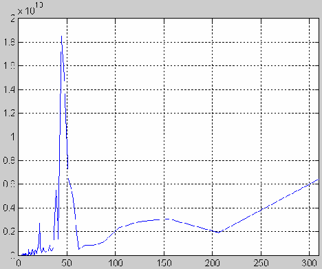
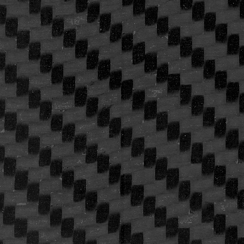
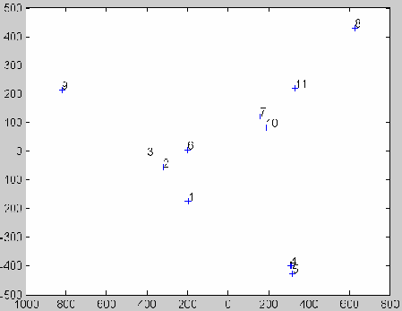
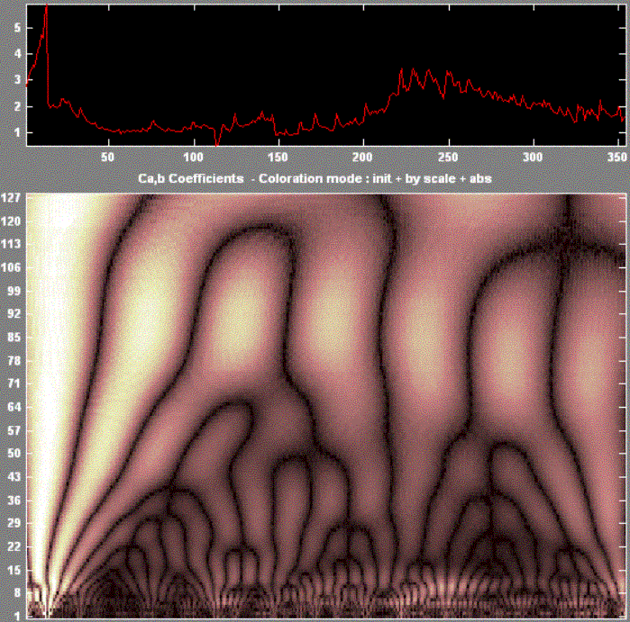
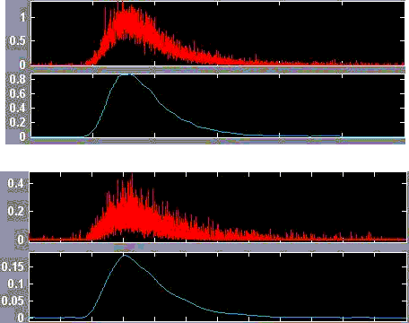

Frequency Domain Analysis

Frequency domain analysis (FDA) encompasses a range of mathematical research techniques for revealing the frequency/spectral components of data, which often permits new insights into the fundamental mechanisms behind the data.
The diagram below shows monthly average temperature data from Casey base in Antarctica in red, and a Fourier transform of the of the data in blue. The frequency domain representation shows that the data is composed of a small number of dominant frequencies and some 'noise'.

It is also possible to analyse the frequency components of 2D data, including images. The image below shows an internal courtyard of L'Hôtel des Invalides in Paris.
By extracting the horizontal and vertical discrete Fourier transforms of the image, and converting these to periodograms (period = 1/frequency), we can quantitatively extract information about the principal architectural features in the image. The horizontal periodogram is given below. The peaks indicate three main horizontal feature dimensions of approximately 22, 39 and 44 pixels. For comparison, the average height of the people in the image is about 20 pixels.

Another important tool in FDA is the wavelet transform. This tool reveals not only the spectral components in data, but also how those components vary with respect to the independent variable (time, displacement, etc). Wavelet analysis of the Casey temperature data suggests that the temperature data could be modelled by the sum of three principal frequency components plus the addition of two normally distributed random noise components.
The 2D discrete wavelet transform decomposes an image into an orthogonal set of sub-images representing horizontal, vertical and diagonal frequency components at dyadic scales. This ability to capture image features at different scales and orientations means that the 2DDWT is an excellent method for representing texture. Consider the carbon fibre composite sample below.

We can use wavelet texture analysis to automatically classify the surface finish into 'good' and 'bad' categories. Taking a set of 11 samples, 1-5 were good, and 6-11 were bad. We use the 2DDWT decomposition to create a texture feature vector set. Using principal components analysis we can devise a linear combination of the feature vector elements that explains a majority of the variation in the original images. Plotting the 1st and 2nd principal components, we can locate the original samples in the texture space. Note that all the good sample are in the lower half of the plot. We can now take an arbitrary sample, compute the 2DDWT decomposition and using the 1st and 2nd principal components, we can automatically classify the sample as good or bad.

The diagram below shows daily average data for water turbidity, and the continuous wavelet transform of that data. The frequency domain representation shows strong components with a 90-120 period across all of the data, as well as higher frequency components present around day 250. This raises the interesting question of why these components are observed and what do they represent?

Note in the diagram above that wavelet analysis produces information from the data over a wide range of scales. This enables it to characterise features that might exist in the same data from the nano-scale to the macro-scale.
FDA can be a useful tool in the analysis of data and the development of quantitative models based on data. Wavelet analysis can also be used for data compression, noise removal and data reconstruction. The diagrams below show raw experimental data in red, and the de-noised signal obtained from wavelet analysis in blue.

Applications of wavelet analysis in the literature include:
- Estimation of elastic moduli of composite materials at high temperature by analysis of impact sounds.
- Estimation of properties of metal coatings by analysis of spectral components in laser generated Rayleigh waves.
- Analysis of Southern Oscillation Index data to identify long-term variability in the El Niňo.
- Analysis of complex automotive suspension vibration to reduce impact harshness.
- Structural damage detection in buildings based on vibration monitoring.
- Analysis of rainfall/runoff relationships in karstic geological system.
- Analysis of rainfall-runoff data variability to isolate climatic effects from anthropogenic effects.
- Identifying underlying trends in employment data for C++ and Java programmers.
- Objective classification of fabric pilling based on the two-dimensional discrete wavelet transform.
- Combined nano- to micro-scale classification of tribological surfaces.
In fact, whatever your data, FDA will probably be able to tell you something about it that you didn't previously know.
Last updated: 19 January 2020